Tema CS3: Aritmética
(Ejercicios resueltos)
1 Divisores y división euclídea
Ejercicio 1.1. Asignarle a la variable a el valor 16800 y a la variable
b el valor -990.
(%i155) a:16800$ b:-990$
Ejercicio 1.2. Calcular el conjunto de los divisores positivos de b.
(%i157)
divisors(b);
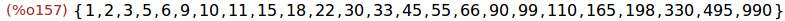
Ejercicio 1.3. Calcular la suma de los divisores de b.
(%i158)
divsum(b);
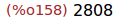
Ejercicio 1.4. Calcular el cociente y el resto de la división euclídea
de a entre b.
(%i159)
divide(a,b);
Ejercicio 1.5. Asignarle a las variables q y r el cociente y el resto
de la división euclídea de a entre b.
(%i160)
[q,r]:%;
Ejercicio 1.6. Compobar, usando is, que el dividendo (a) es igual al
divisor (b) por el cociente (q) más el resto (r).
(%i161)
is(a=b*q+r);
Ejercicio 1.7. Calcular el resto de dividir 17 entre 5.
(%i162)
mod(17,5);
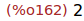
2 Máximo común divisor y mínimo común múltiplo
Ejercicio 2.1. Calcular el máximo común divisor de a y b.
(%i163)
gcd(a,b) ;
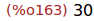
Ejercicio 2.2. Calcular el mínimo común múltiplo de a y b.
(%i164)
lcm(a,b);
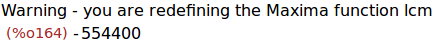
3 Números primos
Ejercicio 3.1. Comprobar si los números 101 y 1001 son primos.
(%i165)
primep(101);
(%i166)
primep(1001);
Ejercicio 3.2. Calcular el mayor primo menor que 1001.
(%i167)
prev_prime(1001) ;
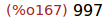
Ejercicio 3.3. Calcular el menor primo mayor que 1001.
(%i168)
next_prime(1001);
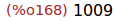
Ejercicio 3.4. Descomponer 2520 en factores primos.
(%i169)
factor(2520) ;
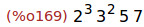
Ejercicio 3.5. Calcular la descomposición de 2520 en factores primos.
(%i170)
ifactors(2520) ;
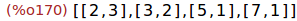
Ejercicio 3.6. Descomponer 2^67-1 en factores primos.
(%i171)
factor(2^67-1);
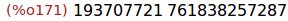
4 Programación básica
Ejercicio 4.1. Escribir un programa para calcular la descomposición en
factores primos de los números 100, 105, ..., 125.
(%i172)
for i from 100 step 5 thru 125 do (print(i,"=",factor(i)));
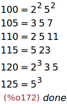
Ejercicio 4.2. Un número entero n es perfecto si la suma de sus
divisores positivos distintos de n es igual a n.
Escribir un programa que calcule los números perfectos menores que 500.
(%i173)
for k from 1 thru 500 do
(if k=divsum(k)-k
then print(k, "es perfecto"))$
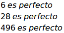